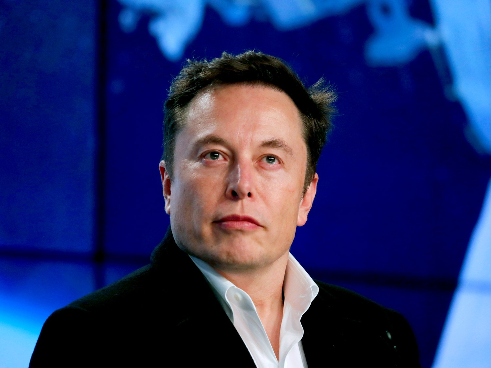

<section class="header">
  <div class="jumbotron jumbotron-fluid">
    <div class="container">
      <h1 class="display-2">TECH BLOG</h1>
      <p class="lead">World's best technology forum. Get information about the latest technologies</p>
    </div>
  </div>
</section>

<section class="blog-posts py-4">
  <div class="container">
    <div class="row">
      <div class="col-md-8">
        <article class="blog-post mb-3 ">
          <div class="row">
            <h3 class="blog-show-heading">Tech Blog Forum</h3> 
            <div class="col-sm-12">       
              <div *ngFor = "let blog of blogs">
                <div class="card mb-2 card-deck flex-row flex-nowrap">
                  <a [routerLink] = "['/blogs' , blog._id]">
                    <div class="card-body">
                        <h4 class="card-title">{{blog.title}}</h4>
                    </div>  
                  </a>                  
                </div>
              </div>
            </div>
            <a class="btn btn-success mt-4" routerLink = '/blogs'>New Post</a>
          </div>
        </article>
      </div>
      <aside class="col-md-4">
        <!--Social Links-->
        <h4 class="aside-heading mt-4 pl-2">Popular Aurthors</h4>
        <article class="row author mb-3">
          <div class="col-sm-4">
            
          </div>
          <div class="col-sm-8">
            <h5 class="m-0">Elon Musk</h5>
            <p class="m-0">Elon Musk FRS is a Business magnate, industrial designer, and engineer. He is the founder, CEO, CTO, and chief designer of SpaceX; early stage investor, CEO, and product architect of Tesla, Inc.</p>
         </div>
        </article>
        <article class="row author mb-3">
         <div class="col-sm-4">
           
         </div>
         <div class="col-sm-8">
           <h5 class="m-0">Bill Gates</h5>
           <p class="m-0">Bill Gates is an American business magnate, software developer, investor, and philanthropist. He is best known as the co-founder of Microsoft Corporation</p>
        </div>
        </article>
        <article class="row author mb-3">
         <div class="col-sm-4">
           
         </div>
         <div class="col-sm-8">
           <h5 class="m-0">Sundar Pichai</h5>
           <p class="m-0">Pichai Sundararajan, better known as Sundar Pichai, is an Indian-American business executive. He is the chief executive officer of Alphabet Inc. and its subsidiary Google.</p>
        </div>
       </article>
       
      </aside>
    </div>
  </div>
</section>

